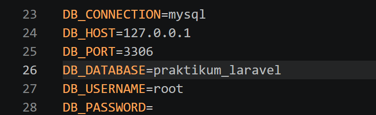
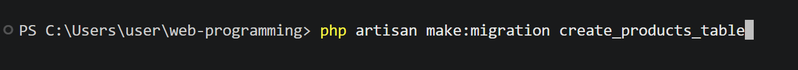
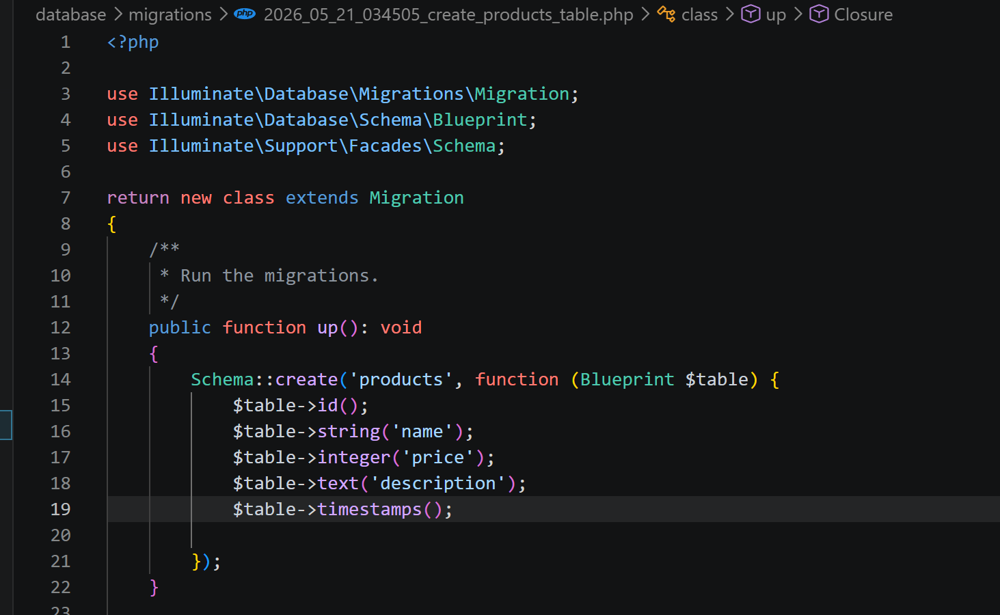
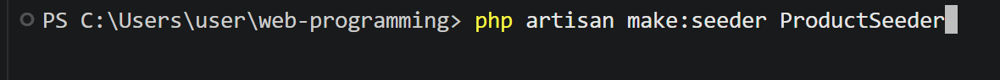
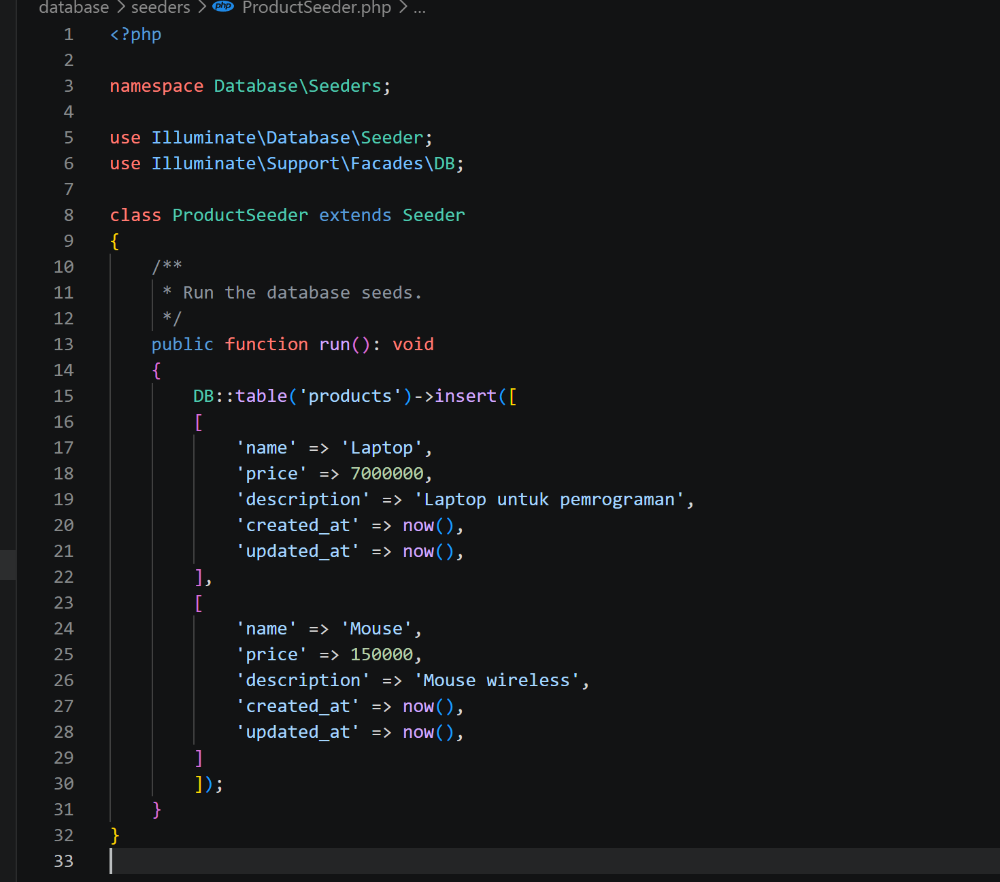
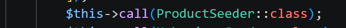
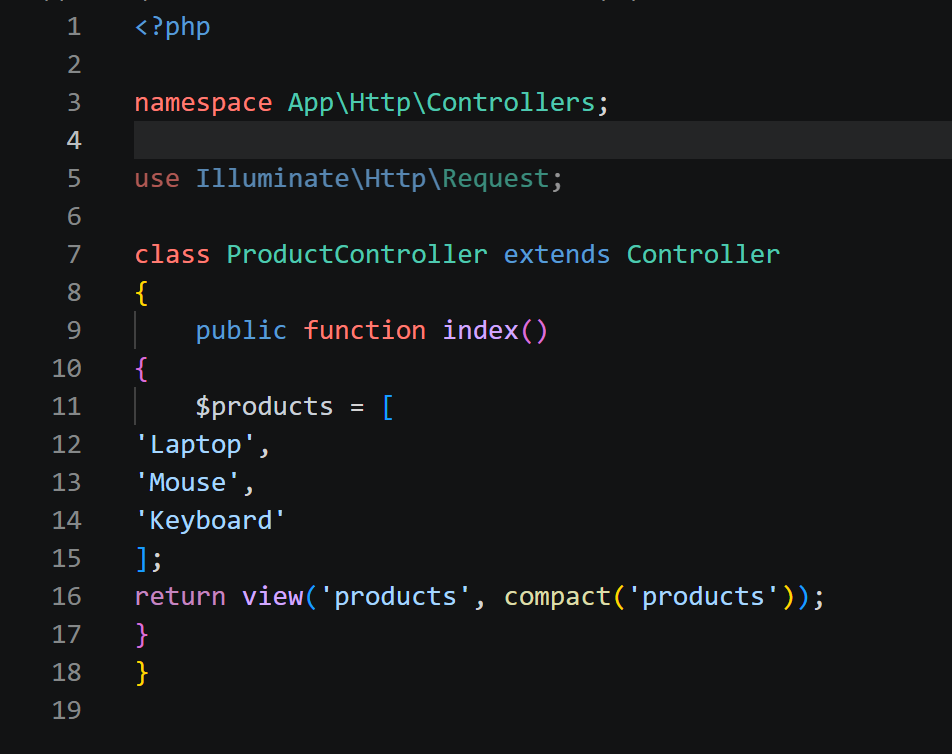
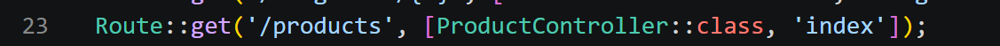
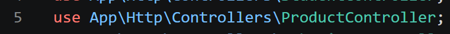
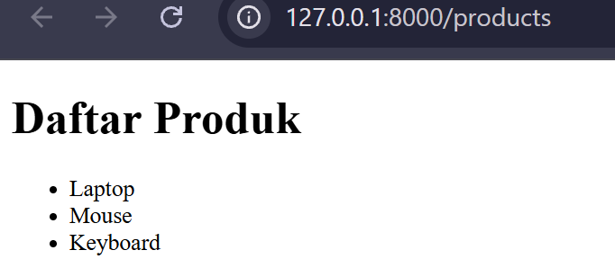

Laporan Praktikum Pemrograman Web
Pendahuluan
Praktikum ini bertujuan untuk memberikan pemahaman dan keterampilan dasar kepada mahasiswa dalam membangun aplikasi web modern berbasis framework PHP dengan menerapkan konsep MVC (Model View Controller). Mahasiswa diharapkan mampu memahami struktur dan alur kerja Laravel sebagai salah satu framework yang banyak digunakan dalam pengembangan aplikasi web. Selanjutnya praktikum ini bertujuan untuk melatih kemampuan mahasiswa dalam mengelola database menggunakan migration dan seeding, membuat serta mengatur routing aplikasi, membangun model untuk interaksi data, membuat tampilan antarmuka menggunakan Blade Template, serta mengembangkan controller sebagai penghubung antara model dan view.
Dengan mempelajari materi tersebut, kita mampu memahami proses pengembangan aplikasi secara terstruktur, efisien, dan mudah dipelihara. Pada akhir praktikum, mahasiswa diharapkan dapat mengimplementasikan seluruh materi dalam bentuk aplikasi CRUD (Create, Read, Update, Delete) sederhana sehingga memiliki dasar yang kuat untuk mempelajari pengembangan aplikasi web tingkat lanjut seperti autentikasi, API, middleware, dan deployment aplikasi Laravel.
Langkah 1: Konfigurasi Database
Proses awal diawali dengan melakukan konfigurasi koneksi database lokal pada file env. Pengaturan disesuaikan dengan mengubah beberapa parameter utama seperti nama database yang digunakan, *username*, serta password bawaan dari server MySQL/XAMPP.

Langkah 2: Pembuatan Migration
Migration adalah fitur Laravel yang digunakan untuk membuat dan mengelola struktur database menggunakan kode program.
Migration memudahkan developer dalam: Membuat tabel, Mengubah struktur tabel, Menghapus tabel, Versioning database


Menjalankan migration menggunakan perintah php artisan migrate , setelah dijalankan perintah tersebut maka secara otomatis tabel products akan terbentuk secara otomatis.
Rollback berfungsi untuk membatalkan migration.
php artisan migrate:rollback digunakan untuk membatalkan migration dan php artisan migrate:fresh digunakan untuk menjalankan ulang seluruh migration.
Langkah 3: Pembuatan Seeder
Seeding digunakan untuk mengisi data awal ke database.
Seeder sangat membantu saat:
Pengujian aplikasi, Membuat data dummy, Menyiapkan data awal sistem
Membuat seeder
File seeder berapa pada folder database/seeders
Membuat Data SeederBuka file ProductSeeder.php, kemudian ubah menjadi :

Tambahkan pemanggilan seeder pada file DatabaseSeeder.php :

Selanjutnya jalankan perintah php artisan db:seed
Langkah 4: Pembuatan Model & Controller
Model digunakan untuk berinteraksi dengan database. Laravel menggunakan Eloquent ORM untuk mempermudah manipulasi data. Sedagkan Controller digunakan untuk mengatur logika aplikasi. Controller menjadi penghubung antara model, view & request user
Perintah Pembuatan Model:
php artisan make:model ProductPerintah Pembuatan Controller:
php artisan make:controller ProductController
Menghubungkan route ke controller dengan menambahkan pada web.php


Langkah 5: Pembuatan View (Blade Template)
View digunakan untuk menampilkan halaman kepada pengguna. Laravel menggunakan Blade Template Engine. File view berada pada folder resources/views.

Jalankan dengan akses http://127.0.0.1:8000/products
